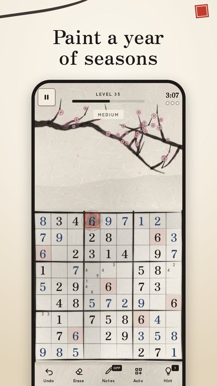
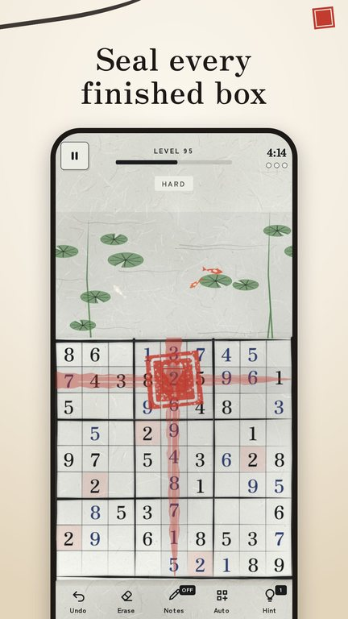
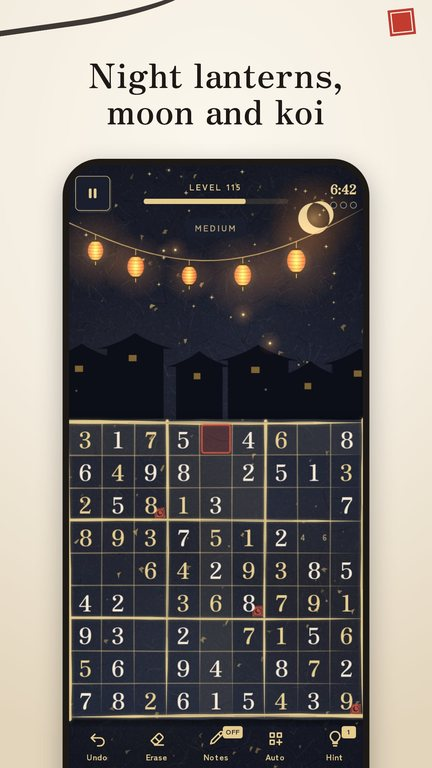
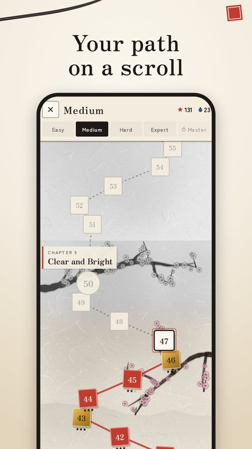

Sudoku
Classic logic puzzles in ink




Fill the grid. Watch the seasons paint themselves.
Sudoku: Ink & Paper is the classic number puzzle, brushed in sumi ink on warm washi paper. Every row, column and box holds each digit exactly once. As you solve, an ink painting grows in the margin, and every ten levels the season turns: plum blossoms in late snow, cherry and wisteria, iris and lotus ponds with koi, summer lanterns, the harvest moon, maple and ginkgo, camellias in deep winter.
Choose your path
- Five difficulty paths: Easy, Medium, Hard, Expert and Master
- Each path keeps its own progress and stars, so you can switch any time and never get stuck
- Easy starts with gentle 6×6 minis; Master opens after level 20 on Expert
- Every puzzle has exactly one solution and is graded by human techniques: singles, pairs, pointing, X-Wing, XY-Wing and Swordfish
A year on a scroll
- 24 seasonal chapters, one for each of the 24 solar terms of the East Asian calendar
- A hand-scroll map: finished seasons fill with color, the rest wait in grey mist
- After the first year, the seasons return in new places: a mountain village, a river town, a temple on the hill
- Rain, snow, petals, fireflies, dragonflies and swallows drift around the edges while the grid stays calm
Stars, seals and ink
- Three stars per puzzle: one for solving, one for no mistakes, one for no hints
- Solve flawlessly under par time to earn a gold seal
- Earn ink drops from new stars, bosses, seals and the daily and weekly puzzles, and spend them on hints. Ink is earned only, never sold
- Unlock ink colors, seal shapes, digit styles and papers with stars
Every day, every week
- Daily puzzle with a streak calendar stamped with red seals
- Weekly Speed: one puzzle for the whole week, with bronze, silver and gold times
- Free play at any difficulty, and detailed statistics for every level of challenge
Play your way
- Smart hints that fill a cell and name the technique
- Notes, auto-notes, number-first input, undo and erase
- Classic mode with three mistakes, or relaxed mode with no limit
- Leave any time: your puzzle is saved exactly where you stopped
Fair by design
- No ads at all in the first 25 levels
- After that, an occasional ad between levels, never during play
- Watching a video to continue, to skip a hard level or for a hint is always optional
- One optional purchase removes the between-level ads for good
- No purchasable currencies, no loot boxes, no subscriptions
Play anywhere
- Works offline, no account needed
- Available in 14 languages